For Garmin AMOLED
Six AMOLED-optimized screens, calorie math that counts every pound in your pack, and a treadmill mode that works when GPS doesn't. Built for ruckers, hikers, backpackers, and vest walkers.
One-time purchase. No ads, no account, no phone app, no subscription.
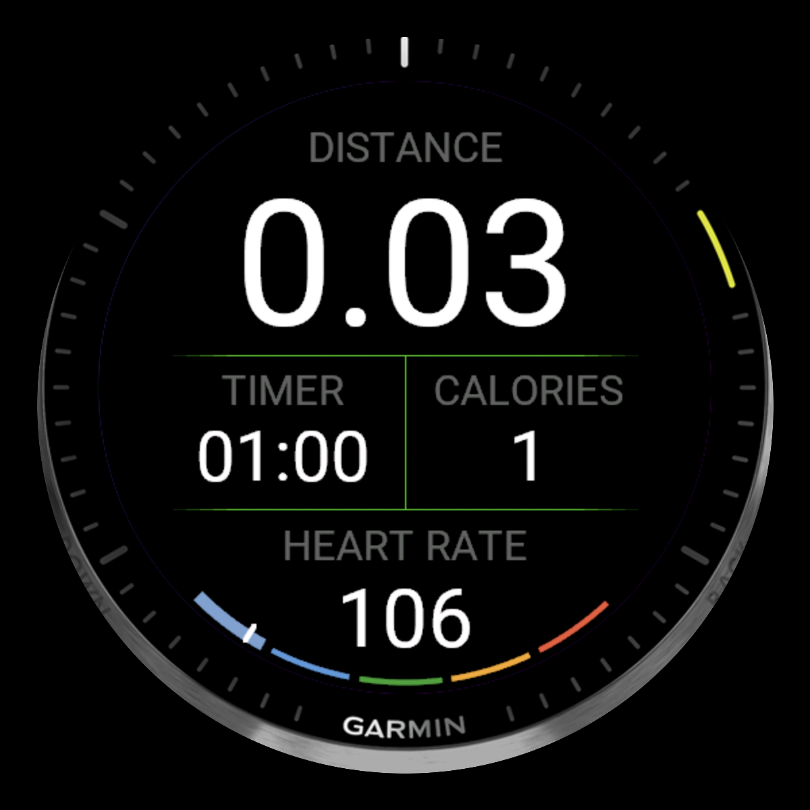
Why RuckTrack
Garmin's built-in Walk and Hike profiles don't know how much weight you're carrying, so they under-credit a 35-pound ruck by 10 to 20 percent. RuckTrack uses the Pandolf load-carriage equation, the model validated by U.S. Army research, to include your pack weight, terrain, and grade in every calorie.
Pandolf math on pack weight, speed, grade, and surface (Road, Gravel, Trail, Sand). When GPS is iffy or you stop on a hill, RuckTrack falls back to your watch's heart-rate estimate so calories never stall.
Distance, calories with pack bonus, pace and vertical speed, lap data, HR zones, and a clock. High-contrast on AMOLED. Nothing that needs squinting.
Two indoor modes. Auto scales your watch's HR-based estimate by pack weight. Manual takes incline and belt speed and runs full Pandolf math. Sessions save as Indoor Walk in Garmin Connect.
Outdoor sessions classify as Rucking (FIT subsport 124), not just another Hike. Connect names them descriptively too — "Ruck 35 lb" or "Treadmill Ruck 16 kg" — so your activity list reads at a glance.
Open any saved ruck on Garmin Connect for grade and metabolic rate plotted second by second, right next to the native pace and heart-rate charts.
Every setting, preset, and history entry stays on your watch. No companion phone app, no servers, no analytics, no third-party SDKs.
On the watch
Designed for the way you actually use a watch on a ruck: glance, get the number, look back at the trail.
Hero distance, current time and total calories side by side, and a live HR zone arc gauge along the bottom edge. The calorie number on this page is the same one that shows up on the calories page and writes to your FIT file as Ruck Calories. No drift between surfaces.
Total calories as the hero. Below it, average burn rate (kcal/hr) and pack bonus (the percent of the session's burn that came from carrying weight). The bottom line shows the pack, terrain, and any reward kcal earned over an unloaded baseline.
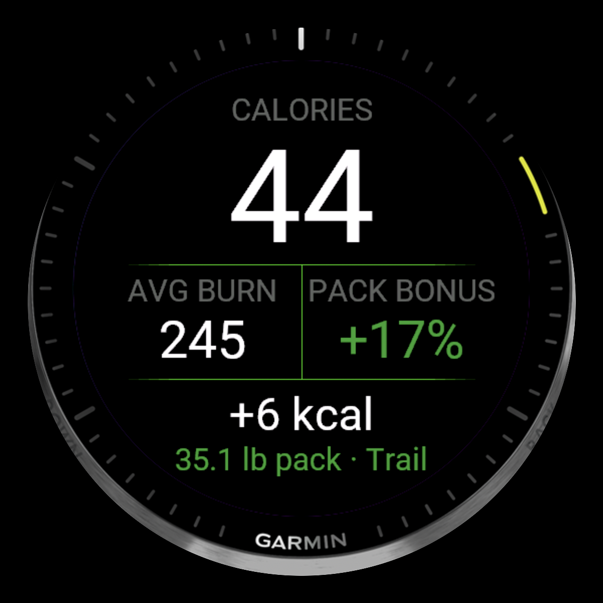
Current pace at the top, total elevation gain and vertical speed in the middle, and overall average pace at the bottom. Vertical speed shows green or red arrows based on whether you're climbing or descending.
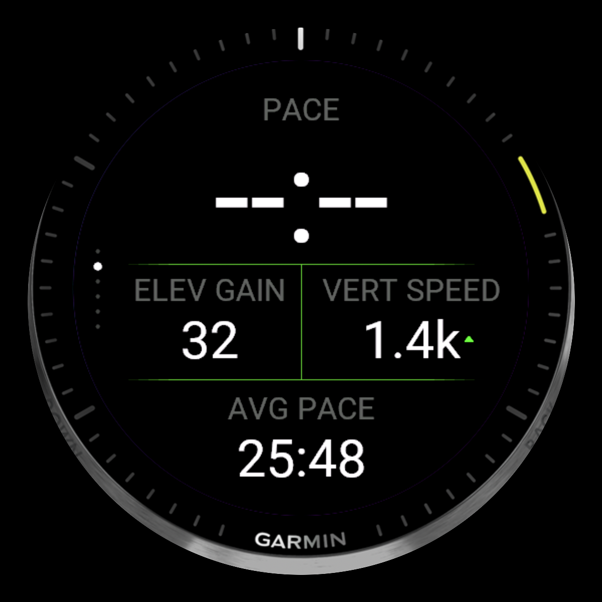
The remaining three pages give you lap data with pace, distance, and time; an HR zones gauge with a pulsating heart icon and circular zone arc; and a clock with battery indicator for when you just want to know how long is left.
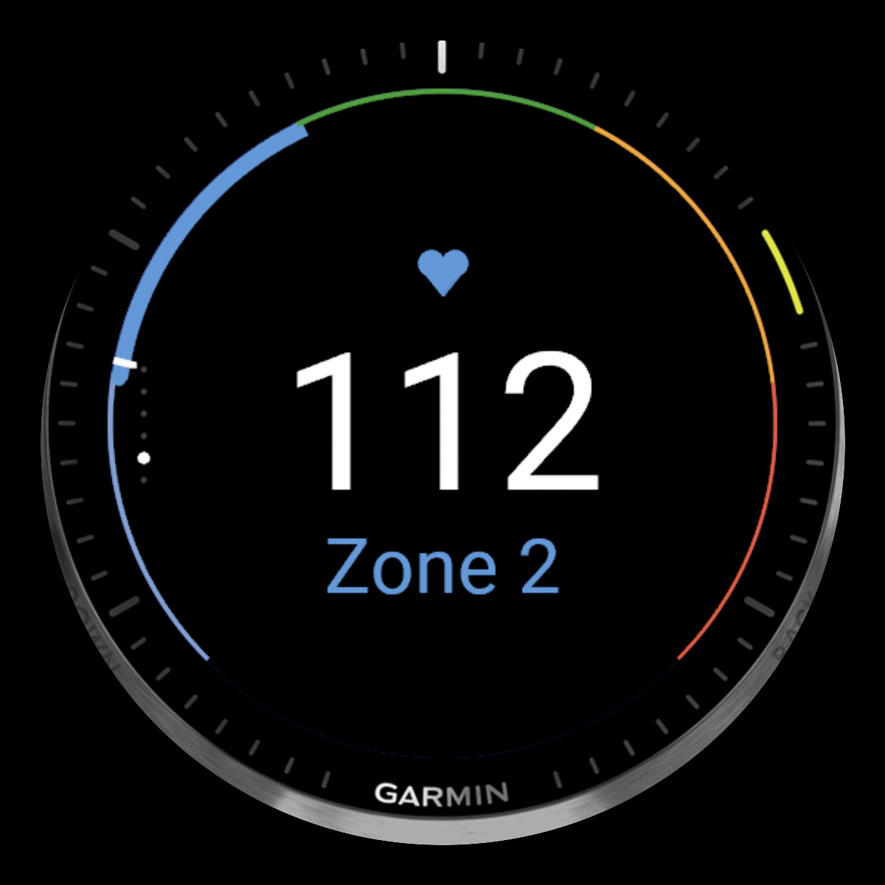
When you're done
Five or six pages, depending on the mode. Distance and pace; calories with pack bonus; elevation chart; HR zone breakdown; lifetime totals; and a final pointer to the deeper stats in Garmin Connect.
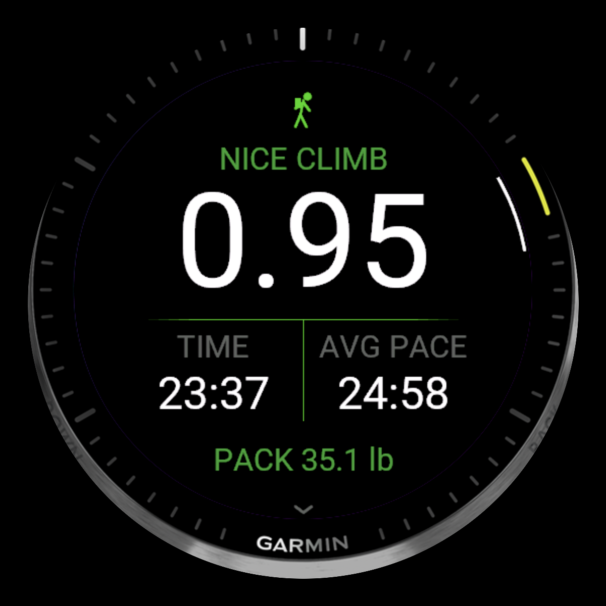
Overview — distance, pace, pack weight
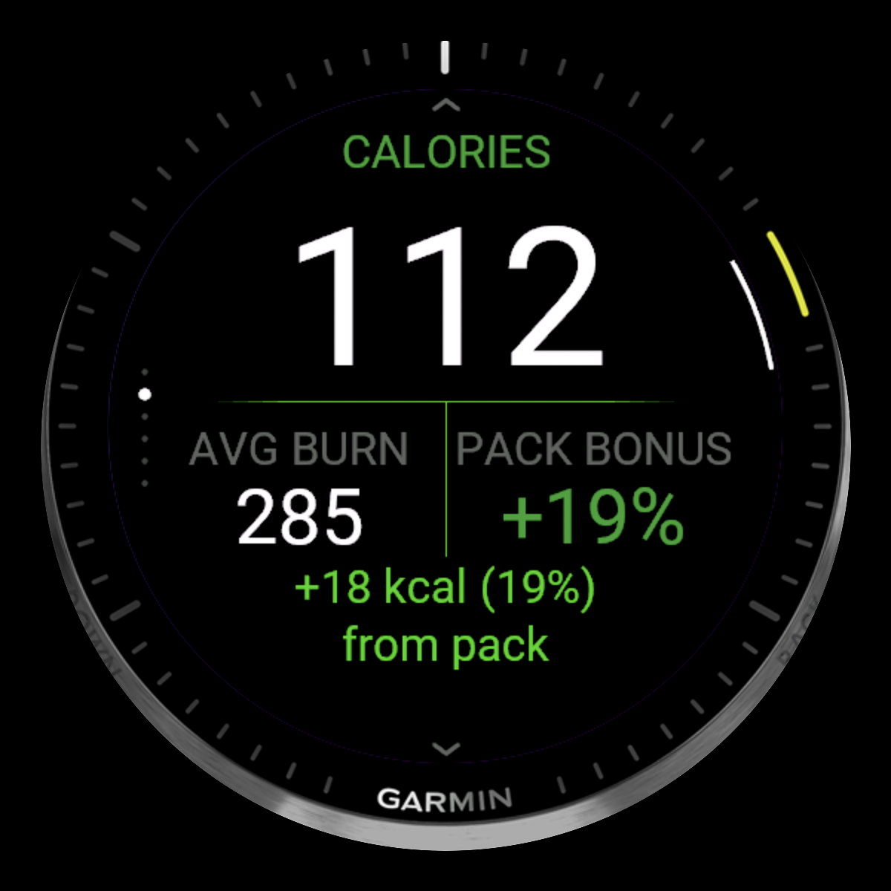
Calories — total burn + pack bonus
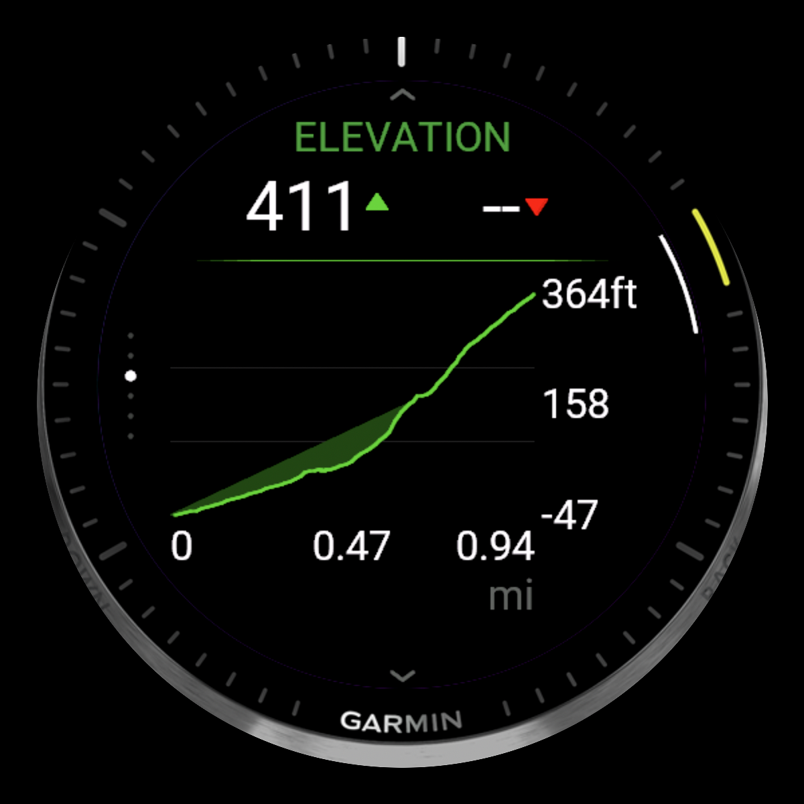
Elevation — ascent and descent chart
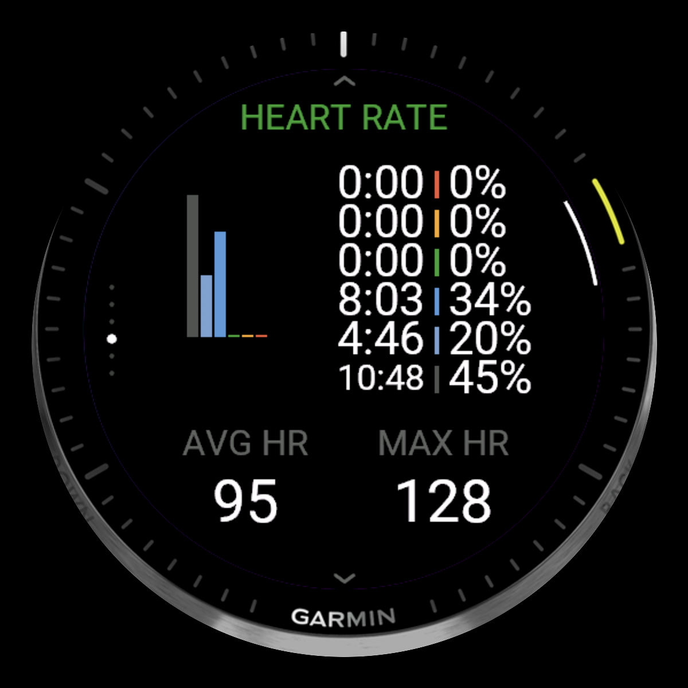
HR zones — histogram + time per zone
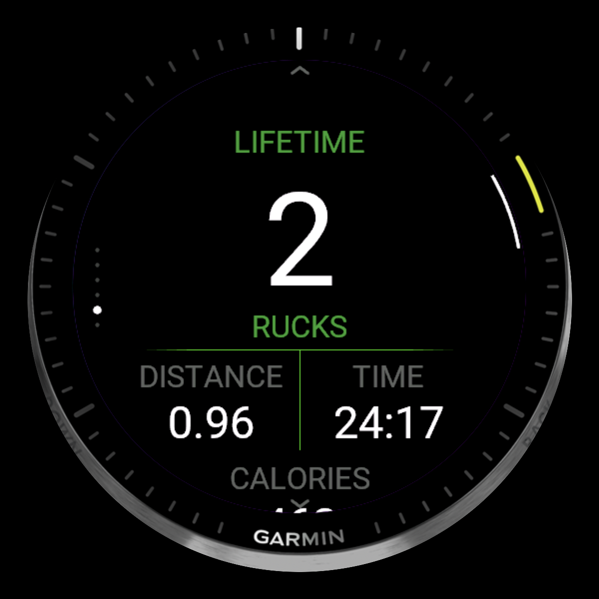
Lifetime totals — every ruck so far
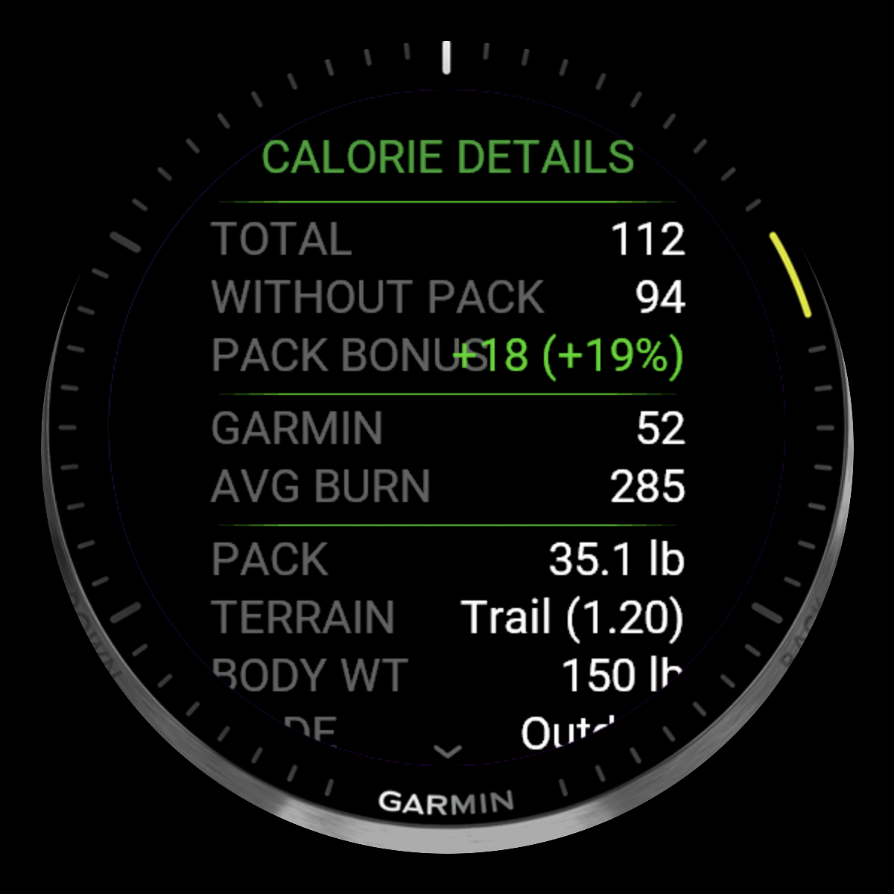
Calorie details — all the numbers
In Garmin Connect
Garmin restricts third-party apps from writing the headline calorie field at the top of an activity, so your load-aware numbers live one section down. Open any saved ruck and look under Stats → Connect IQ for Ruck Calories, Calories Without Pack, Pack Calorie Bonus, Burn Rate, and Terrain Surface. Per-second grade and metabolic rate appear on the activity's chart panel.
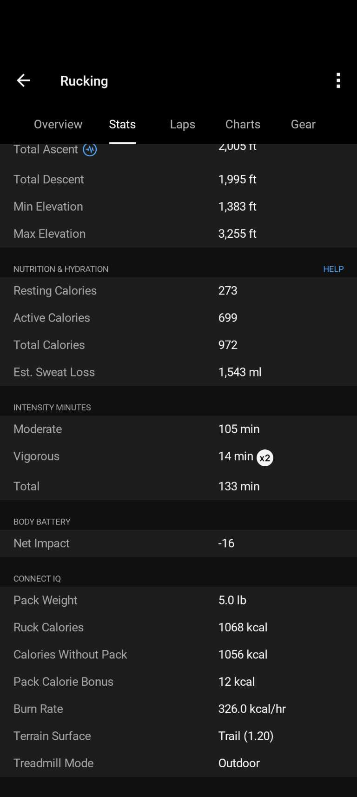
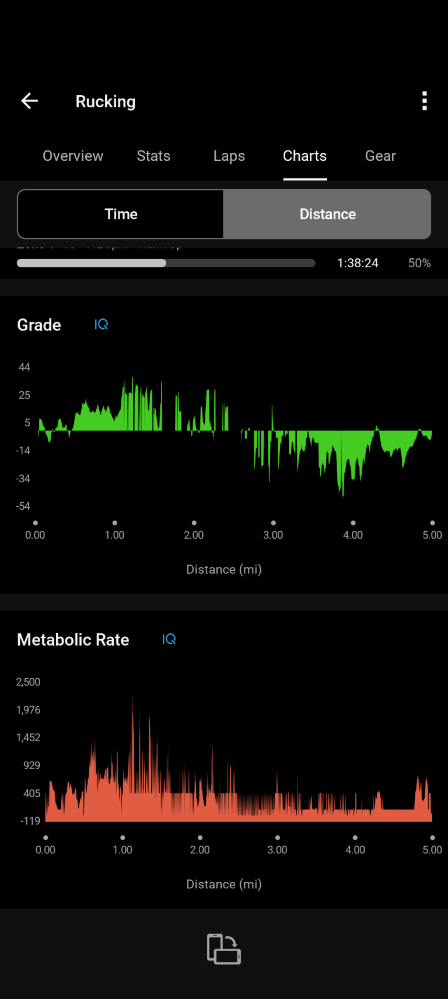
Compatibility
Including the Forerunner 165 / 265 / 570 / 965 / 970, fēnix 8 and 8E, Instinct 3 AMOLED, Venu 2 / 3 / 4, vívoactive 5 / 6, epix Pro, MARQ Gen 2, D2 Mach 1 and Air X15, Descent MK3 and G2, Approach S50 / S70, tactix 7/8 AMOLED, and quatix AMOLED.
Full device list → or check the Connect IQ Store listing for the live compatibility list.
Install once. Every saved ruck lands in Garmin Connect with the activity classification and load-aware stats your watch couldn't give you before.
Get RuckTrack on the Connect IQ Store